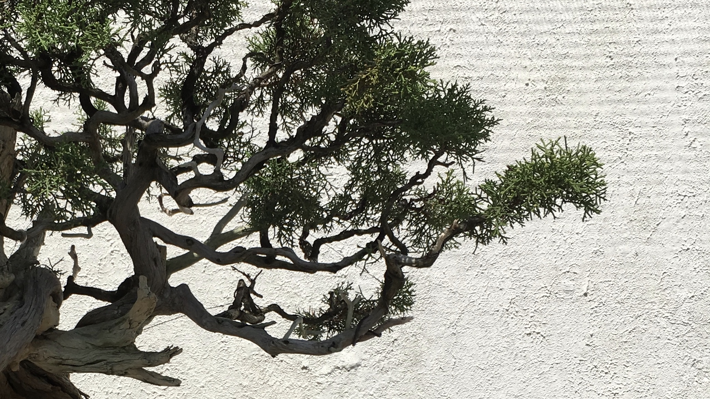
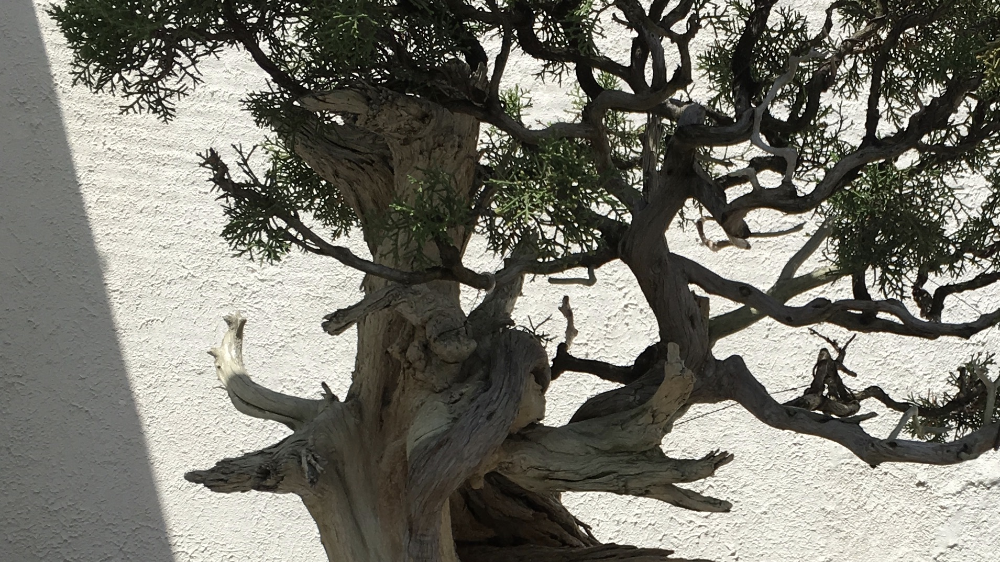
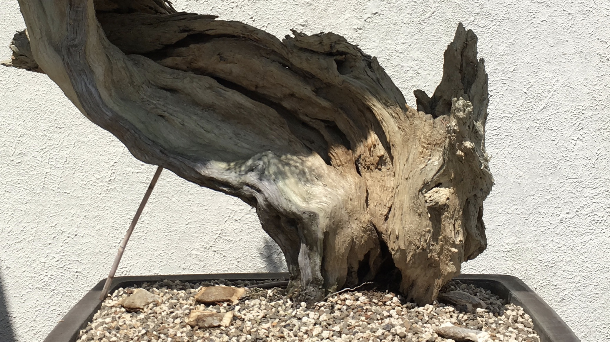

Edakubari
Qualities of the Branches
- - Growth in multiple directions
- - Varied branch thickness

Kokejun
Qualities of the Upper Trunk
- - Graceful tapering of the trunk
- - Proportions of a full-size tree

Tachiagari
Qualities of the Lower Trunk
- - Firmly-attached roots
- - Eight points of balance
- - Layered, aged bark
Text from Bonsai by the Art Research Center, Ritsumeikan University in collaboration with Kyoto University